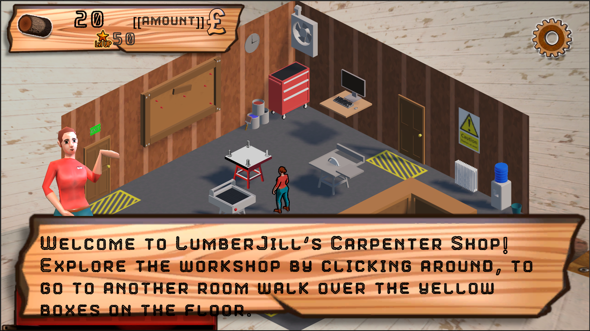
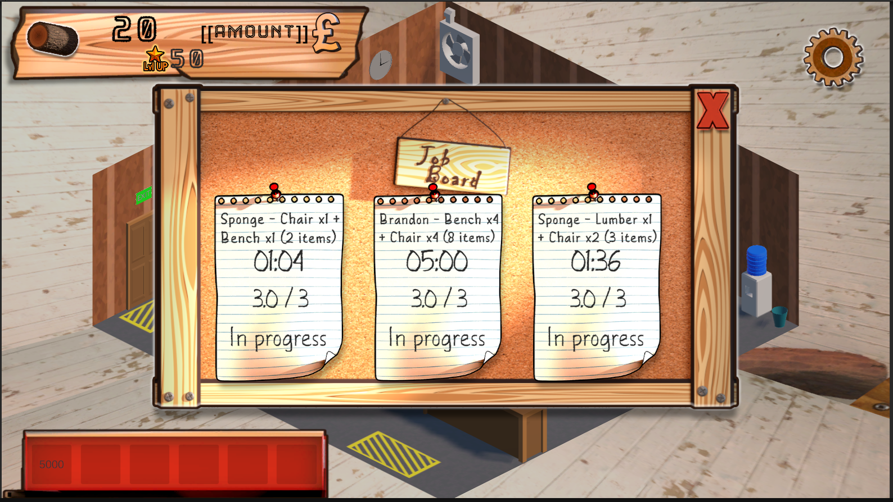
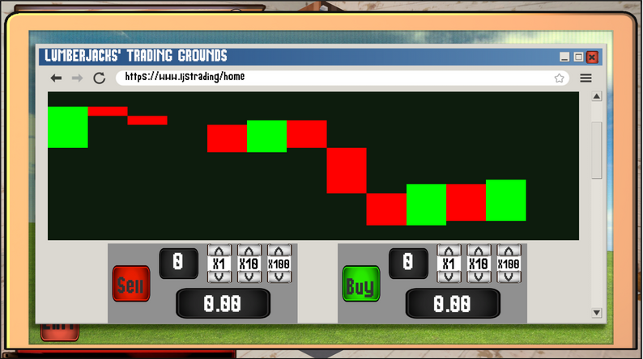
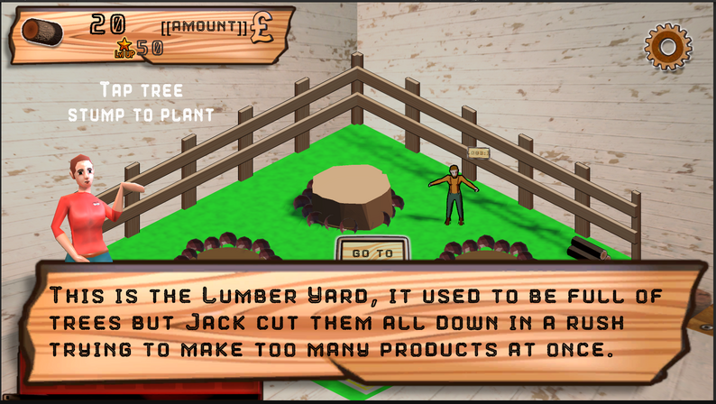

LumberJill: The RPG
Build, Craft, Care. A cozy mobile woodworking management RPG built around production, crafting, shop systems, offline harvesting, and real-world lumber pricing.
Category: Game Projects | Role: Programmer and Systems Designer | View Repo
About the Game
LumberJill: The RPG is a cozy-industrial mobile management simulator made in Unity. The player buys lumber, places machines, processes raw logs into usable materials, crafts wooden products, completes jobs, and manages a small woodworking workshop. The project also connects its economy to real-world lumber pricing, making the stock market feature part of the core identity instead of a separate menu gimmick.
The design targets short 15 to 20 minute sessions, readable touch controls, and a tactile workshop loop. The final product combines resource management, production timing, crafting, delivery, offline progression, and sustainability systems into one connected gameplay loop.
My Contribution
I worked as the programmer and systems designer. My main responsibility was turning the design into a working Unity 6 project with modular gameplay systems. I focused on the technical loop that made the game playable: input, UI state, building placement, machine operation, inventory, storage, crafting, shop flow, production, saving, and mobile testing.
A major part of my work was the machine and production pipeline. I built the input-process-output structure that converts logs into processed materials and final products. Each machine operates independently but still works with storage, crafting, and delivery systems, so the project can support more machines without rewriting the whole architecture.
Systems I Built
- Computer and shop UI flow with input locking so the player does not move while modal panels are open.
- Building placement and instantiation flow for placing machines in the workshop.
- Machine processing logic using timed work cycles, manual controls, and production UI.
- Inventory, hotbar, storage, item transfer, and collectible handling.
- ScriptableObject-driven item and shop data so recipes, machines, and products can be tuned without hard-coding values.
- Dynamic lumber price logic using external data and scaled in-game values to keep the economy readable.
- Offline harvesting and sustainability loop that simulates wood collection and seed generation while the app is closed.
- Save and load support for resources, building positions, machine queues, and player state.
Testing and Fixes
I tested continuously during development. After major changes I ran smoke tests through the full loop: open the computer, open the shop, buy an item, place a machine, process wood, craft, deliver, close the UI, and reopen it to check stability. I also tested touch behaviour with Unity Remote and Android builds to check scrolling, tapping, drag interactions, mobile readability, and performance.
Skills Used




